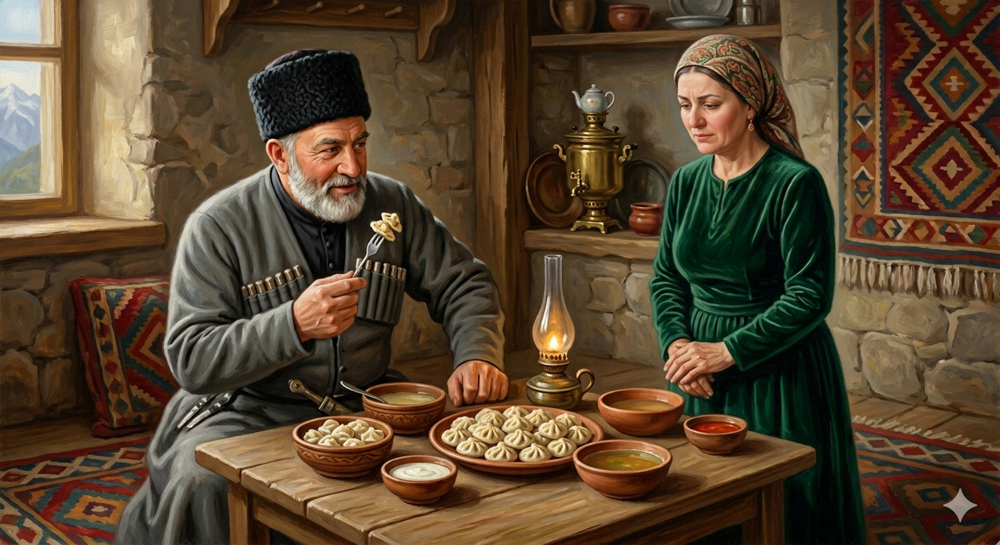

И.А. Дахкильгов. Хьехаме дувцарш - поучительные рассказы-притчи.
И.А. Дахкильгов. Хьехаме дувцарш - поучительные рассказы-притчи. Из ингушского фольклора.

Кагийбараш шишша-кхоккха бохк
Цхьанахьа хьоашалгӀа венав гаргара саг. Сов чӀоагӀа иман дайна, цӀаьрмата ше хиларах хьаьшана геттар кагий хьалтӀамаш яьй фусамнанас. Шийна уж хьалтӀамаш духьалаеча, хьаьша раьза хиннавац. Футтаройна шишша-кхоккха хьалтӀам мӀараца лоацаш яа волавеннав из. Хьаьшас хьалтӀамаш дукха юаш санна хеташ, ше фу даь из цунна дӀахойтаргда ца ховш, саготденнача фусамнанас хаьттад: - Ва, хьанех, шунцигахьа байна нах каша масс-масса вуллаш бохк? Из фу ала гӀерт дика кхийттав хьаьша. Жоп деннад цо: - Даьра, дегӀа эсала бараш шишша а кхоккха а цхьана дӀабехк оаха, хӀаьта гӀаьххьа дегӀ дараш цхьацца бохк. Къаръенна йисай фусамнана.
РУССКИЙ
Маленьких хороним по двое-трое
В некий дом пришел гость. Хозяйка была бесстыдной и жадной. Она наготовила гостю весьма маленькие галушки. Когда их поставили перед гостем, он остался недоволен таким отношением к себе. Назло жадной хозяйке он стал цеплять вилкой зараз по две-три галушки и отправлять их в рот. Хозяйка, видя это, заерзала, стала думать, как заставить гостя кушать по одной галушке. Наконец, она спросила гостя: - Скажи, гость, в ваших краях в одну могилу сколько покойников кладут? Гость догадался, что хозяйка хотела сказать. Он ответил: - Богом клянусь, если покойники телом маленькие, то мы их кладем в могилу по два, а то и по три. Нормального сложения покойников мы кладем в могилу по-одному. Хозяйка больше не вымолвила ни слова.
ENGLISH
We bury the little ones in groups of two or three
A guest arrived at a certain house. The landlady was shameless and greedy. She prepared some very small dumplings for the guest. When they were placed before the guest, he was displeased by this treatment. To spite the greedy landlady, he began to spear two or three dumplings at a time with his fork and pop them into his mouth. Seeing this, the hostess grew restless and began to think of a way to make the guest eat just one dumpling at a time. Finally, she asked the guest: 'Tell me, guest, in your part of the world, how many of the dead do you bury in a single grave?' The guest realised what the hostess was getting at. He replied: 'I swear to God, if the deceased are small in stature, we bury them two or even three to a grave. Those of average build, we bury one to a grave.' The hostess did not utter another word.
НОХЧИЙН
ПОГОВОРКИ
Базар ехачун бухь оллабеннаб (бос бахаб). Понурился (побледнел) продавец на базаре, когда цены упали.Къамаьлаца хьаьша вузавац. Пустой болтовней гостя не накормишь.Ма хов хьалтӀамаш хестае, мамогга дулх даа. Вовсю хвали галушки, но вовсю уминай мясо.Мух еначун дакъа диачун че лезаяц. Живот не заболит у того, кто съест долю закапризничавшего за едою.Хаьхочо къу зув, къуно хаьхо лараву. Сторож высматривает вора, вор следит за сторожем.Хьайга ца кхайкхача ма гӀо, дӀагӀо алалца а ма вагӀа. Не ходи, куда не звали; не засиживайся, пока не попросили.Ца ховчун кхача ховчо биаьб. Ужин неумехи съедает умелец.Цкъа аьннар хоз дикача сесага. Хорошая жена услышит однажды сказанное.Цхьан маьче чу ши ког боллалургбац. В один чувяк две ноги не засунешь.ЦӀаьрматача цӀеннанас оттадаь шу теза (къахьа) хул. Пища жадной хозяйки бывает пресной (горькой).ЦӀаьрматача фусам-дас яьхад: “Модз дукха диача, дог лозадоал”. Скупой хозяин приговаривал: “Сердце начинает болеть у того, кто съест много меда”.Ше даь дика доадар да из тӀехьадетташ хилар. Доброе дело пропадает, если им попрекают.Шу чам болашагӀа хул фусам-да безамегӀа хуле. Угощение вкуснее, когда хозяин любезнее.Ӏаман кӀоаргал чкъаьрана хов, хена лакхал чана (михана) хов. Рыба знает, насколько глубоко озеро, а медведь (ветер) знает, сколь высоко дерево.